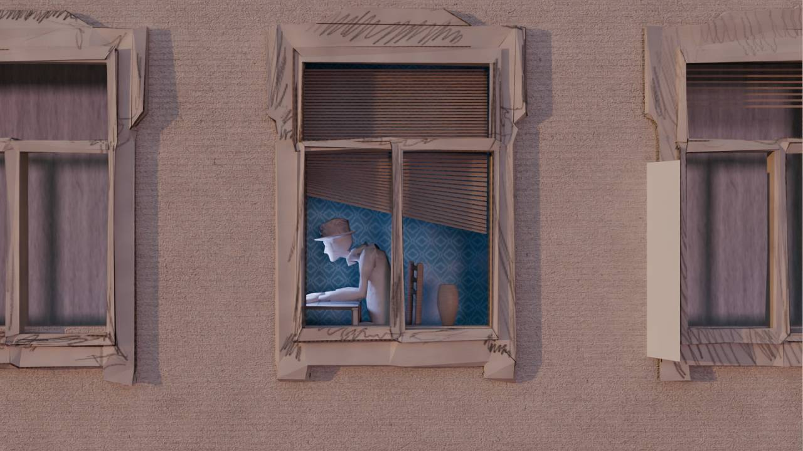

Who Left The Luggage?
January 15, 2025
The project "Who Left The Luggage?" was an experimental animation inspired by the opening sequence of "Only Murders in the Building." The goal was to create something similar to a series opening while also delivering a complete narrative within a 40s animation.
Throughout the project, I explored different techniques and styles, focusing on blending 2D animation with the 3D so that I could achieve a cohesive visual experience.
Below is a video showcasing the final animation experiment:
Who Left The Luggage Animation

Image References
3D Models
Blender Viewport
Second Part Animation Viewport
2D Animation (Krita)
Who Left The Luggage Gallery

